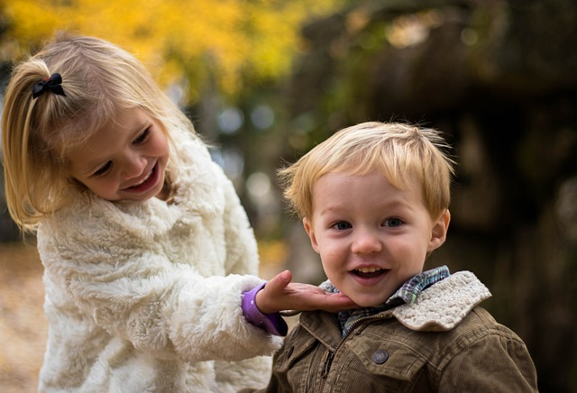

Kiedy przygotowywałam się do roli mamy, czytałam od deski do deski wszystkie czasopisma, które można było wtedy znaleźć na rynku. Sporo się z nich dowiedziałam, trochę też mnie okłamały, mówiąc wprost (np. że poród jest piękny :P), ale o jednym temacie się nawet nie zająknęły. O temacie rozwoju mowy. Owszem, kiedy opisywano osiągnięcia Dziecka miesiąc po miesiącu, to można było znaleźć wzmiankę o tym, że powinno ono np. już mówić pierwsze słowo czy składać zdanie. Ale nie czytałam wtedy ani jednego artykułu o tym, jak mowa powinna się rozwijać i jak można wspierać ten rozwój.
I podejrzewam, że niewiele się pod tym względem zmieniło, bo gdy mówię Rodzicom, że ich Dziecko powinno już np. wymawiać taką i taką głoskę albo używać takich i takich słów, to oni najczęściej odpowiadają “Gdybyśmy wiedzieli wcześniej”.
Dlatego własnie rozpoczynam krótki – bo składający się z sześciu artykułów – cykl, opisujący rozwój mowy Dziecka. Dzisiaj pierwszy z nich, z którego dowiecie się, jakie są etapy rozwoju mowy i co mniej więcej w tym czasie powinno osiągnąć Wasze Dziecko. W kolejnych wpisach będę szczegółowo omawiać te etapy.
Pierwszym etapem, na który mamy niewielki wpływ, ale który jest szalenie istotny, jest etap prenatalny. To w tym momencie kształtują się i rozwijają wszystkie narządy mowy Dziecka, rozwija się także słuch. To dlatego powinniśmy robić wszystko, co się da, żeby ciąża przebiegała w miarę możliwości bezproblemowo.
Drugi etap to okres melodii. Trwa do ukończenia przez Dziecko 12. miesiąca życia. Jego koniec obwieszcza nam stosowanie przez Malucha pierwszych słów, zazwyczaj “mama”, “tata”, “baba”. Można tu wyróżnić głużenie i gaworzenie, czyli powtarzanie pewnych samogłosek, spółgłosek i sylab. Zauważyć tu należy, że głużenie jest nieświadome, a gaworzenie to zamierzone działanie Dziecka.
Od 12. do 24. miesiąca życia trwa okres wyrazu. Na jego początku powinny się pojawić pierwsze słowa. Dziecko wzbogaca swój słownik, wymawia wszystkie samogłoski oprócz ą, ę oraz część spółgłosek. Dużo tutaj jeszcze upraszczania, normą jest, że Maluch opuszcza trudne dla niego głoski lub sylaby, używa tylko pierwszej sylaby danego słowa lub ostatniej. Normą jest także mówienie we własnym języku, który jest trudno zrozumiały dla otoczenia. Dziecko stosuje sporo wyrazów dźwiękonaśladowczych, jak np. “miau” na oznaczenie kota, czy “mu” na krowę.
Kolejny etap to okres zdania, który trwa od 24. do 36. miesiąca życia. Dziecko powinno zacząć ten etap używając pierwszych zdań. Na początku są one dwuwyrazowe, np. “Mama daj”, “Tata chodź”. Kolejne miesiące przynoszą rozbudowę tych zdań do 3-, 4-, a nawet 5-wyrazowych. To nadal nie jest etap, w którym Maluch posługuje się poprawną, bogatą polszczyzną. Upraszcza, co może, stosuje swoje słowa, tworzy neologizmy, czasami tworzy słowa według swoich zasad gramatycznych. Wymawia też już większość głosek oprócz R, które może być zastępowane przez J lub L, oraz S, Z, C, DZ i SZ, Ż, CZ, DŻ, które nadal mogą brzmieć jak Ś, Ź, Ć, DŹ.
I ostatni etap – okres swoistej mowy dziecięcej – w którym Dziecko doskonali swoje umiejętności komunikacyjne, rozwija słownictwo, wzbogaca wypowiedzi. Opanowuje wówczas głoski S, Z, C, DZ oraz SZ, Ż, CZ, DŻ i R. Rozwój mowy Dziecka, które rozpoczyna naukę w szkole podstawowej, powinien być zakończony. Dziecko takie rozmawia swobodnie z innymi i nie ma wad wymowy.